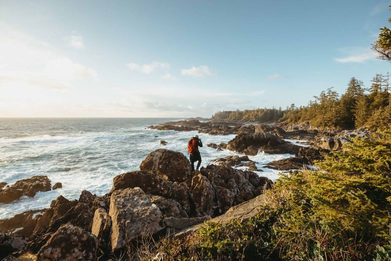

Welcome to Moffat Bay Resort!
Discover Moffat Bay Beach Cabin Resort, your sanctuary on the serene shores of Bellevue Island. Situated just moments away from the beach and within easy reach of local attractions.Our resort offers a perfect blend of relaxation and adventure. Experience the tranquility of nature while staying in our luxurious cabins, designed to provide ultimate comfort and an unforgettable retreat.
Our Story
Moffat Bay Resort was founded by four visionaries with a shared dream of combining the beauty of nature with the comforts of home. Nestled on the scenic shores of Bellevue Island, the resort boasts breathtaking views of the ocean and a unique blend of wildlife and picturesque landscapes. Our cabins are designed to offer a haven of peace, whether you're soaking up the sun, exploring the vibrant local attractions, or enjoying quality time with family and friends. At Moffat Bay, every moment is an opportunity to create lasting memories.
The Experience
Immerse yourself in the Moffat Bay experience, where the harmony of nature and comfort awaits. Located on Bellevue Island, our cozy cabins offer spectacular ocean views, serene beaches, and unparalleled relaxation. Spend your days kayaking, fishing, or simply enjoying the pristine coastline. As the sun sets, indulge in the calming sounds of the waves and vibrant hues of the horizon. Moffat Bay Resort is more than just a destination—it's a journey to rejuvenation. Reserve your stay today and step into your dream escape.
Book Your Getaway! →